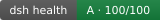
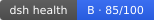
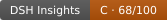

Badge
健康徽章 · 把分数带进 README
一枚 SVG 徽章 = 你插件的客观健康分，随每日快照自动刷新。对作者是信任信号与修复指引，对生态是分数走出本站的最小分发单元。
长什么样（真实样例，实时渲染）

omdsh-dev/DSH-better-sidebar · A · 100/100
zhu1090093659/dsh-web · B · 85/100
ConsoleSun/Gemini-Eyes · C · 70/100如何解读
徽章显示「等级 · 分数」：100 起扣四档（fail −20 / 较重 −10 / 中 −5 / 轻 −2），阈值 A ≥ 90 B ≥ 75 C ≥ 60 D。评的是六维框架中的计分四维（工程质量 / 文档完整性 / 可发现性 / 维护活跃），每条扣分都带证据、可在插件页和仪表盘抽屉里逐项核查——分数的意义不在于高低，在于可复核。框架全文见 关于 · 指标体系。
为什么值得挂
对作者：潜在用户装前 10 秒的信任凭证；分数提升是看得见的修复回报；徽章链回插件页，带来反链与同类定位。对生态：目录与市场装不下所有插件，但每个 README 都可以挂分数——徽章是让「信得过」在生态里自传播的钩子。我们不做排名、不做安全审计，只提供客观信号。
接入（输入你的仓库，自动生成）
你的插件仓库
输入后预览徽章
写法一 · 徽章 + 链接插件页（推荐）
[](https://dsh-insights.com/p/owner/repo/)
说明与边界
徽章内容随每日快照自动更新（GitHub 图片缓存最长一天）；分数掉档不需要你改任何代码。启发式评估 ≠ 安全审计；徽章 404 = 仓库不在当前权威集（可能是门禁未过或校验未覆盖，可到 仓库 提 issue 查询/申诉）。想先本地自查，可用我们的体检工具：npx --yes github:ice5kysl/dsh-plugin-health <owner/repo>。